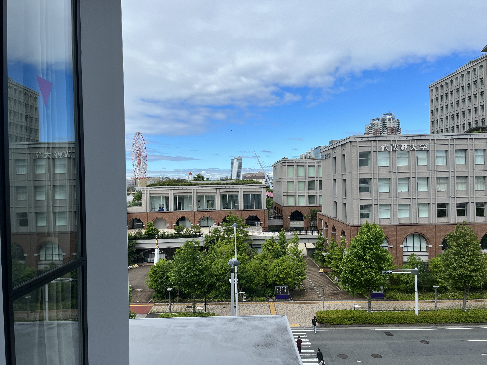

About
- Name: 伴 匠生 / Takumi Ban
- 武蔵野大学データサイエンス学部 2年
- Faculty of Data Science, Musashino University
- 趣味：写真撮影・音楽
- 目標：世界をシアワセにするつよつよエンジニア！
- 短期：HTML/CSSでWebサイトを作成できるようになる
- 長期：人の行動データから未来予測ができるように研究を拡大させる
有明キャンパス
夢の大橋(有明)
Skill
- Python
- SQL
- HTML
- CSS
- JavaScript
Field
- Bluetooth Signal
- Congestion Estimation
- Database
- Object Detection
- Behavioral data sensing by sensor
Works
- あなたの顔は何顔!?顔タイプ判別器の作成(2021-11-30)
- Python: システム全体の実装
- OpenCV: 画像から顔部分の抽出
- TensorFlow: 顔分類用の学習モデルの構築・分類
- Flask: Webアプリケーションとしてシステムを実装
- JSiSE2021年度学生研究発表会で研究発表(2022-03-03)
- Python: システム全体の実装
- PostgreSQL: 測定したデータの格納・計算時の抽出
- 情報処理学会 第84回全国大会(2022-03-05)
- Python: システム全体の実装
- BERT: 事前学習モデルの作成・MASK推定機能
CNNを用いて4つの顔タイプに分類する学習モデルを作成

発表タイトル: Bluetooth機器を用いた屋内環境における混雑度の推定
北海道支部特別賞を受賞
Bluetoothの電波から空間内の混雑度計量を行い、ユーザの利用意図に最も合う施設を選べるようにすることを目指した
 <
<
発表タイトル: 事前学習モデルBERTによる飲食店メニュー名における修飾語提案方式
BERTのMASK推定機能と作成した事前学習モデルから魅力的な飲食店のメニュー名を自動生成することを目指した


Contact